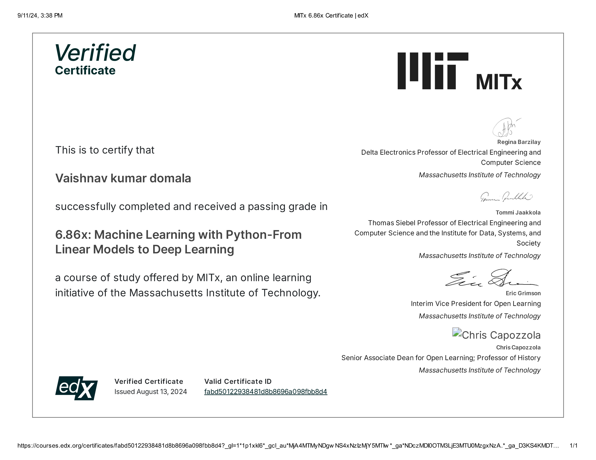

Welcome to My Portfolio
About me
With over 5 years of experience in Microsoft Technologies, I specialize in SQL Server Management Studio (SSMS), SQL Profiler, and SQL Server Integration Services (SSIS). My expertise lies in all stages of the Software Development Life Cycle (SDLC), including analysis, design, development, and deployment of business applications. I am proficient in creating and managing database objects such as Stored Procedures, Triggers, Views, and Indexes using DDL and DML statements, writing complex T-SQL queries, implementing ETL processes, and optimizing database performance.
Skills
Contact Information
- Email: vaishnavdomala@gmail.com
- Phone: 7036206080
- LinkedIn: Profile
Education
Postgraduate in Data Science and Machine Learning
MIT (In Progress)
This program enhances my skills in advanced analytics and enables me to contribute to more complex data-driven projects.
Bachelor of Technology in Computer Science
JNTU University (2014 - 2018)
Focused on core computer science subjects and developed a strong foundation in programming and database management.
Experience
KMG IT Services Pvt Ltd (May 2023 - Present)
Led SQL Server development efforts, delivering enhancements and resolving issues, resulting in a 20% increase in client satisfaction. Engineered database objects to client specifications, exceeding expectations in 95% of cases.
RAMCO Systems Pvt Ltd (Jul 2022 - Feb 2023)
Defined project scope, gathered business requirements, and performed analysis using SSMS. Developed SQL scripts and stored procedures, resulting in a 40% improvement in application performance.
Caliphony Software Pvt Ltd (Feb 2019 - Apr 2022)
Developed Stored Procedures, Views, Functions, Triggers, and queries to retrieve patient information. Played a pivotal role in ETL processes, ensuring smooth data movement from source to target systems.
Projects
Velocity Risk (May 2024 - Present)
- Gathered and analyzed client requirements, preparing comprehensive technical documents and test cases for various Developed Objects.
- Written Stored procedures to calculate the premium considering several factors that influence the insurance rate.
- Made changes to existing Stored Procedures to add new carriers, and worked on the Clearance Module, understanding the Stored Procedures involved.
Convelo Insurance (Jan 2024 - Apr 2024)
- Developed new stored procedures to retrieve data as tags for forms in IMS.
- Managed form uploads, associated forms with policies, and organized policies by states and lines, including the implementation of conditions for respective lines.
Ascot Group (May 2023 - Jan 2024)
- Attended client and team meetings, understood project requirements.
- worked on importing data from XML to multiple tables using Stored Procedures, and collaborated on tags and forms.
- Resolved issues and bugs as needed.
- Developed Stored Procedures to calculate premiums based on specific conditions.
Kontena Nasional Berhad (Jul 2022 - Feb 2023)
- Defined project scope, gathered business requirements, performed analysis, designed solutions using SSMS, and wrote complex SQL queries, Stored Procedures, Views, and User Defined Functions.
- Developed SQL scripts and stored procedures to meet system functionality and performance requirements, resulting in a 40% improvement in application performance.
- Designed SSIS packages with optimized controls, leading to a 25% improvement in ETL process performance.
- Utilized SQL Profiler to monitor T-SQL queries and stored procedures for web and Windows applications.
Hospital Management Suite (HMS) (May 2021 - Apr 2022)
- Wrote complex T-SQL queries, Stored Procedures, and Views on SQL Server 2008, gathered requirements, performed analysis, and maintained SQL databases.
- Created tables, triggers, constraints, and stored procedures to customize applications per project specifications, enhancing functionality by 15%.
- Managed critical daily activities to ensure smooth project execution and adherence to timelines.
- Analyzed existing stored procedures and queries, optimized their performance, and reduced execution time by 30%.
Excelicare (Feb 2019 - Apr 2021)
- Developed Stored Procedures, Views, Functions, Triggers, and queries to retrieve patient information and improve product features.
- Implemented transformations including Data Conversion, Conditional Split, Merge, Merge Join, Union All, and Derived Column to manipulate and transform data as per project requirements and enhance data quality and consistency.
- Developed complex T-SQL queries and stored procedures for reporting and analysis.
- Collaborated with stakeholders to define data requirements and reporting standards.
Certification
PGP in Data Science and Machine Learning Integrated with MIT
Completes on Jan 2025
Pursuing an Online Postgraduate program(with INTELLIPAAT) in Data Science and Machine Learning in collaboration with MIT. This program will enhance my skills in advanced analytics and enable me to contribute to more complex data-driven projects.
MIT Certification
Below is my certification on Machine Learning with Python from Linear Models to Deep Leaning:
